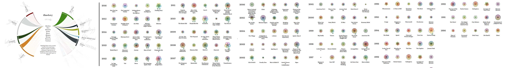
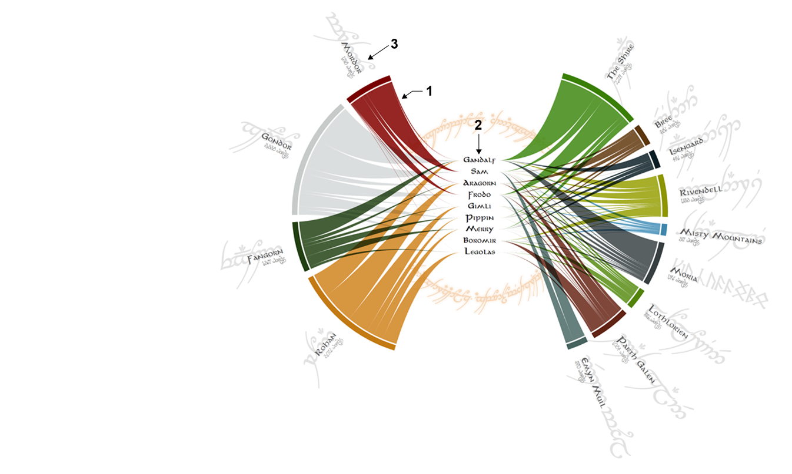
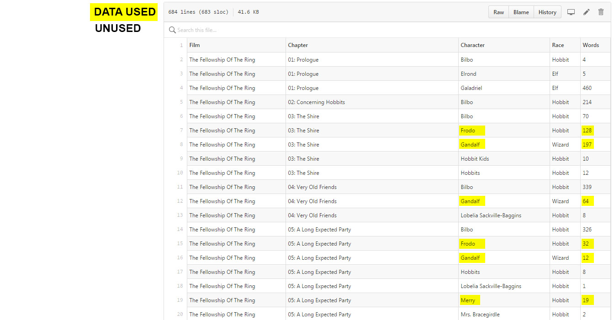
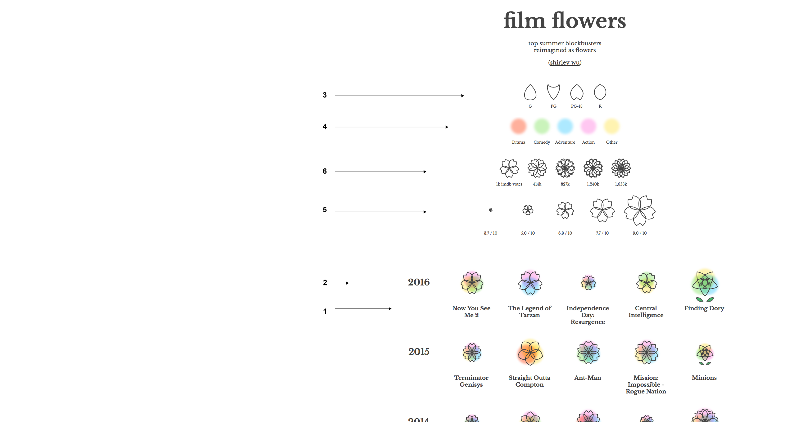

Data Sources
Even though the two designers of Data Sketches agree on a topic each month on which to make a data visualization, their data sources and their scope differ widely. For example, for their first sketch from July 2016, Nadieh (left) used data concerning a film trilogy (3 films) while Shirley (right) gathered data for all the top US grossing films from the last 26 years (135 films).

Nadieh
Nadieh uses three Nominal variables in her drawing:
1) Line of dialogue.
2) who said it.
3) where they said it.

The first two data sources she obtained from a .tsv file posted onto github by another User. The list of characters in the film included in this spreadsheet is more than the amount she included in her data sketch. She whittled down the list of characters and focused on the main group of characters who are the driving force for the plot of the three films.

The last variable in her data sketch is the location that these characters were in the film where they spoke the lines. This is not included in the .tsv file. She gathered the data from film scripts found on IMSDB and from her memory of watching the films.
Shirley
Shirley used 6 variables in her drawing of the top five US grossing English Language Films released within the months from June-August from every year since 1990. Two are Nominal types of data, one Temporal, two Ordinal, and one an Average.
1) Title [Nominal]. 2)Year [Temporal]. 3) Rating (PG-R) [Ordinal]. 4) Genre [Nominal]. 5) Rating by Users on IMDB [Statistical - Central Tendency - Mean]. 6) How many imdb votes they received. [Ordinal]

To find this data she first used the search feature on IMDb.com to find the Title and Year of the films. The she used this data to search The Open Movie Database (OMBDb) API for all of the other variables she included.
The layout of her data sketch uses the year and ranking of the films, while the components that make up the flowers appearance uses the other variables.